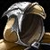

Cloak of the Illidari Council
Cloak of the Illidari CouncilCloak of the Illidari Council118 armor, 24 stamina, 16 intellect, 42 spell damage, 42 healing power, 25 spell crit rating (1.13%)Drops from The Illidari Council, Black Temple
118 armor, 24 stamina, 16 intellect, 42 spell damage, 42 healing power,
25 spell crit rating (1.13%)
Drops from The Illidari Council, Black Temple
What influencers say
Showing 5 of 6 captured remarks, widest reach first, with every view
represented
Sarthe
Sarthe · 102:18
77k views
It depends
While discussing the haste cloak from Illidan, Sarthe says casters can
take this one instead, so the council's real question is whether DPS or
healers are served first.
Zatar (Classic Wow Builds)
Zatar (Classic Wow Builds) · 96:40
67k views
Speaks well of it
Zatar calls it very good and, setting aside the healing haste cloak, the
best cloak for every caster except shadow priest, and suggests giving it
as mage prio since mages receive less tier.
Joardee
Joardee · 119:14
23k views
It depends
Joardee routes it to casters who are not getting the healing cloak,
noting there will never be enough of these to cover every caster, and
says a caster holding this one should not also take the healing cloak.
Crix
Crix · 1:51
17k views
Speaks well of it
Crix puts it at number five on his warlock wishlist and states plainly
that it is the warlock best-in-slot cloak, while noting the healer haste
cloak is contentious.
Fearstreet 528
Fearstreet 528 · 1:20
9k views
It depends
Fearstreet says an arcane mage can replace Royal Cloak of the
Sunstriders with it but calls it a very small upgrade of roughly zero to
ten DPS.
Showing all 7 spec cards.
No specs are selected, so no cards are showing. Use Show every spec to bring all of them back.
Protection Paladin
Prioritynot yet decided
Constraints
Special-attack hit cap9%threat
floor
Precision-3%
Improved Faerie Fire-3%assumed
Gear needs3%
Walking in, before Phase 31%short by
2%
After Azgalor, hands token2.7%short
by 0.3%
Closed by 1 hit gem against 10 sockets in the set.
After Archimonde, hands and
head2.7%short by 0.3%
Closed by 1 hit gem against 10 sockets in the set.
Spell hit cap16%threat
floor
Precision-3%
Gear needs13.1%
Walking in, before Phase 30%short by
13.1%
After Azgalor, hands token0%short by
13.1%
Closed by 1 hit gem against 10 sockets in the set.
After Archimonde, hands and
head1.3%short by 11.7%
Closed by 1 hit gem against 10 sockets in the set.
The constraint that decides this spec's gear is crit immunity, which it
reaches at 490 defense skill, or 284 defense rating from gear.
That rating figure assumes Anticipation at 5 ranks, which supplies 20
defense skill. Without it the requirement is 332 rating.
Pushing crushing blows off the attack table needs 102.4% of miss, dodge,
parry and block on the character sheet.
White swings stop critting at 69.5%, measured at the special-attack hit
cap.
Nothing rostered reaches it this phase, so crit stays linear all tier.
No haste threshold to protect.
Delta
Cloak of the
Illidari CouncilCloak of the Illidari
Council118 armor, 24 stamina, 16
intellect, 42 spell damage, 42 healing power, 25 spell crit rating
(1.13%)Drops from The Illidari
Council, Black Temple in
Protection Paladin terms EPV 58.50
| Stat | Over best pre-phase off-piece, Tempest Keep Phoenix-Wing CloakPhoenix-Wing Cloak108 armor, 37 stamina, 22 defense rating, 27 dodge ratingDrops from Al'ar, Tempest Keep EPV 63.70 | Over best Phase 3 off-piece, Slave Pens Icebound CloakIcebound Cloak267 armor, 30 stamina, 25 defense rating EPV 50.35 | ||
|---|---|---|---|---|
| Change | Converted | Change | Converted | |
| armor | +10 | -149 | ||
| stamina | -13 | -13 stamina · -130 health | -6 | -6 stamina · -60 health |
| intellect | +16 | +16 intellect | +16 | +16 intellect |
| spell damage | +42 | +42 | ||
| healing power | +42 | +42 | ||
| spell crit | +25 | +1.13% | +25 | +1.13% |
| defense rating | -22 | -9.30 defense skill | -25 | -10.57 defense skill |
| dodge rating | -27 | -1.43% dodge | 0 | |
| Stat Highlights (Total Change) | -130 health -9.30 defense skill -1.43% dodge | -60 health -10.57 defense skill | ||
No Tier 6 and no Tier 5 is ranked for this spec in this slot, so that
comparison is not shown. A weapon the workbook does not rank cannot be
compared against, and a spec with no captured gear set has nothing
recorded to carry in.
Elemental Shaman
Prioritynot yet decided
Constraints
Spell hit cap16%spells
Elemental Precision-6%
Nature's Guidance-3%
Totem of Wrath-3%
Gear needs4%
Walking in, before Phase 34.1%clear
by 0.1%
After Azgalor, hands token5.7%clear
by 1.7%
After Archimonde, hands and
head4.3%clear by 0.2%
No crit cap.
Part of this spec's damage is periodic, and periodic damage cannot crit
in this patch, so crit reaches less of its output than the character
sheet suggests.
Global cooldown floor at 50% spell haste, which nothing rostered reaches
from gear this phase.
Delta
Cloak of the
Illidari CouncilCloak of the Illidari
Council118 armor, 24 stamina, 16
intellect, 42 spell damage, 42 healing power, 25 spell crit rating
(1.13%)Drops from The Illidari
Council, Black Temple in
Elemental Shaman terms EPV 66.14
| Stat | Over best Phase 3 off-piece, Black
Temple
 Shroud of the HighborneShroud of the Highborne126 armor, 24 stamina, 23 intellect, 23 spell damage, 68 healing power, 32 spell haste ratingDrops from Illidan Stormrage, Black Temple EPV 68.07 |
Over best pre-phase off-piece, Gruul's Lair Brute Cloak of the Ogre-MagiBrute Cloak of the Ogre-Magi105 armor, 18 stamina, 20 intellect, 28 spell damage, 28 healing power, 23 spell crit rating (1.04%)Drops from High King Maulgar, Gruul's Lair EPV 51.74 | ||
|---|---|---|---|---|
| Change | Converted | Change | Converted | |
| armor | -8 | +13 | ||
| stamina | 0 | +6 | ||
| intellect | -7 | -0.09% spell crit | -4 | -0.05% spell crit |
| spell damage | +19 | +14 | ||
| healing power | -26 | +14 | ||
| spell crit | +25 | +1.13% | +2 | +0.09% |
| spell haste rating | -32 | -32 spell haste rating | 0 | |
| Stat Highlights (Total Change) | +1.04% spell crit +19 spell damage -26 healing power | +0.04% spell crit +14 spell damage +14 healing power | ||
No Tier 6 and no Tier 5 is ranked for this spec in this slot, so that
comparison is not shown. A weapon the workbook does not rank cannot be
compared against, and a spec with no captured gear set has nothing
recorded to carry in.
Balance Druid
Prioritynot yet decided
Constraints
Spell hit cap16%spells
Balance of Power-4%
Totem of Wrath-3%
Gear needs9%
Walking in, before Phase 38.5%short
by 0.6%
After Azgalor, hands token7.5%short
by 1.5%
Closed by 2 hit gems against 8 sockets in the set.
After Archimonde, hands and
head8.4%short by 0.6%
Closed by 1 hit gem against 7 sockets in the set.
Tier rows assume both reachable tokens. Either token breaks the Tier 5
four-piece, whose slots are head, shoulder, chest and hands; both tokens
are raw EPV gains, so the collision is the bonus and not the items.
No crit cap.
Part of this spec's damage is periodic, and periodic damage cannot crit
in this patch, so crit reaches less of its output than the character
sheet suggests.
Global cooldown floor at 50% spell haste, which nothing rostered reaches
from gear this phase.
Delta
Cloak of the
Illidari CouncilCloak of the Illidari
Council118 armor, 24 stamina, 16
intellect, 42 spell damage, 42 healing power, 25 spell crit rating
(1.13%)Drops from The Illidari
Council, Black Temple in
Balance Druid terms EPV
63.08
| Stat | Over best pre-phase off-piece, Karazhan Ruby Drape of the MysticantRuby Drape of the Mysticant105 armor, 22 stamina, 21 intellect, 30 spell damage, 30 healing power, 18 spell hit rating (1.43%)Drops from Prince Malchezaar, Karazhan EPV 59.58 | Over best Phase 3 off-piece, Black Temple Shroud of the HighborneShroud of the Highborne126 armor, 24 stamina, 23 intellect, 23 spell damage, 68 healing power, 32 spell haste ratingDrops from Illidan Stormrage, Black Temple EPV 57.34 | ||
|---|---|---|---|---|
| Change | Converted | Change | Converted | |
| armor | +13 | -8 | ||
| stamina | +2 | 0 | ||
| intellect | -5 | -0.06% spell crit · -1.25 spell damage · -1.25 healing power | -7 | -0.09% spell crit · -1.75 spell damage · -1.75 healing power |
| spell damage | +12 | +19 | ||
| healing power | +12 | -26 | ||
| spell hit | -18 | -1.43% | 0 | |
| spell crit | +25 | +1.13% | +25 | +1.13% |
| spell haste rating | 0 | -32 | -32 spell haste rating | |
| Stat Highlights (Total Change) | +1.07% spell crit +10.75 spell damage +10.75 healing power -1.43% spell hit | +1.04% spell crit +17.25 spell damage -27.75 healing power | ||
No Tier 6 and no Tier 5 is ranked for this spec in this slot, so that
comparison is not shown. A weapon the workbook does not rank cannot be
compared against, and a spec with no captured gear set has nothing
recorded to carry in.
Arcane Mage
Prioritynot yet decided
Constraints
Spell hit cap16%spells
Arcane Focus-10%
Gear needs6%
Walking in, before Phase 36.6%clear
by 0.6%
After Azgalor, hands token4%short by
2.1%
Closed by 3 hit gems against 10 sockets in the set.
After Azgalor, keeps Tier 5
helm6.7%clear by 0.6%
No crit cap.
Global cooldown floor at 50% spell haste, which nothing rostered reaches
from gear this phase.
Delta
Cloak of the
Illidari CouncilCloak of the Illidari
Council118 armor, 24 stamina, 16
intellect, 42 spell damage, 42 healing power, 25 spell crit rating
(1.13%)Drops from The Illidari
Council, Black Temple in
Arcane Mage terms EPV
42.62
| Stat | Over best Phase 3 off-piece, Black Temple Shroud of the HighborneShroud of the Highborne126 armor, 24 stamina, 23 intellect, 23 spell damage, 68 healing power, 32 spell haste ratingDrops from Illidan Stormrage, Black Temple EPV 59.45 | Over best pre-phase off-piece, Tempest Keep Royal Cloak of the SunstridersRoyal Cloak of the Sunstriders116 armor, 27 stamina, 22 intellect, 44 spell damage, 44 healing powerDrops from Kael'thas Sunstrider, Tempest Keep EPV 37.84 | ||
|---|---|---|---|---|
| Change | Converted | Change | Converted | |
| armor | -8 | +2 | ||
| stamina | 0 | -3 | ||
| intellect | -7 | -0.10% spell crit · -2.01 spell damage | -6 | -0.09% spell crit · -1.72 spell damage |
| spell damage | +19 | -2 | ||
| healing power | -26 | -2 | ||
| spell crit | +25 | +1.13% | +25 | +1.13% |
| spell haste rating | -32 | -32 spell haste rating | 0 | |
| Stat Highlights (Total Change) | +1.03% spell crit +16.99 spell damage -26 healing power | +1.05% spell crit -3.72 spell damage -2 healing power | ||
No Tier 6 and no Tier 5 is ranked for this spec in this slot, so that
comparison is not shown. A weapon the workbook does not rank cannot be
compared against, and a spec with no captured gear set has nothing
recorded to carry in.
Shadow Priest
Prioritynot yet decided
Constraints
Spell hit cap16%spells
Shadow Focus-10%
Gear needs6%
Walking in, before Phase 37.3%clear
by 1.3%
After Azgalor, hands token16.4%clear
by 10.4%
After Archimonde, hands and
head14.5%clear by 8.5%
No crit cap.
Part of this spec's damage is periodic, and periodic damage cannot crit
in this patch, so crit reaches less of its output than the character
sheet suggests.
Global cooldown floor at 50% spell haste, which nothing rostered reaches
from gear this phase.
Delta
Cloak of the
Illidari CouncilCloak of the Illidari
Council118 armor, 24 stamina, 16
intellect, 42 spell damage, 42 healing power, 25 spell crit rating
(1.13%)Drops from The Illidari
Council, Black Temple in
Shadow Priest terms EPV
47.48
| Stat | Over best Phase 3 off-piece, Hyjal Summit Nethervoid CloakNethervoid Cloak118 armor, 27 stamina, 18 intellect, 53 shadow damage, 18 spell hit rating (1.43%)Drops from Trash / zone drop, Black Temple; Trash / zone drop, Mount Hyjal EPV 67.96 | Over best pre-phase off-piece Illidari CloakIllidari Cloak70 armor EPV 47.00 | ||
|---|---|---|---|---|
| Change | Converted | Change | Converted | |
| armor | 0 | +48 | ||
| stamina | -3 | +24 | ||
| intellect | -2 | -0.03% spell crit | +16 | +0.20% spell crit |
| spell damage | +42 | +42 | ||
| healing power | +42 | +42 | ||
| shadow damage | -53 | 0 | ||
| spell hit | -18 | -1.43% | 0 | |
| spell crit | +25 | +1.13% | +25 | +1.13% |
| Stat Highlights (Total Change) | +1.11% spell crit +42 spell damage +42 healing power -1.43% spell hit | +1.33% spell crit +42 spell damage +42 healing power | ||
No Tier 6 and no Tier 5 is ranked for this spec in this slot, so that
comparison is not shown. A weapon the workbook does not rank cannot be
compared against, and a spec with no captured gear set has nothing
recorded to carry in.
Affliction Warlock
Prioritynot yet decided
Constraints
Spell hit cap16%spells
Totem of Wrath-3%
Gear needs13.1%
The Suppression talent does not cover this spec's filler spell, so none
of it counts.
Walking in, before Phase 316.1%clear
by 3%
After Azgalor, hands token13.9%clear
by 0.8%
After Archimonde, hands and
head15%clear by 1.9%
No crit cap.
Part of this spec's damage is periodic, and periodic damage cannot crit
in this patch, so crit reaches less of its output than the character
sheet suggests.
Global cooldown floor at 50% spell haste, which nothing rostered reaches
from gear this phase.
Delta
Cloak of the
Illidari CouncilCloak of the Illidari
Council118 armor, 24 stamina, 16
intellect, 42 spell damage, 42 healing power, 25 spell crit rating
(1.13%)Drops from The Illidari
Council, Black Temple in
Affliction Warlock terms EPV 59.18
| Stat | Over best Phase 3 off-piece, Hyjal Summit Nethervoid CloakNethervoid Cloak118 armor, 27 stamina, 18 intellect, 53 shadow damage, 18 spell hit rating (1.43%)Drops from Trash / zone drop, Black Temple; Trash / zone drop, Mount Hyjal EPV 80.33 | Over best pre-phase off-piece, Karazhan Ruby Drape of the MysticantRuby Drape of the Mysticant105 armor, 22 stamina, 21 intellect, 30 spell damage, 30 healing power, 18 spell hit rating (1.43%)Drops from Prince Malchezaar, Karazhan EPV 59.96 | ||
|---|---|---|---|---|
| Change | Converted | Change | Converted | |
| armor | 0 | +13 | ||
| stamina | -3 | +2 | ||
| intellect | -2 | -0.02% spell crit | -5 | -0.06% spell crit |
| spell damage | +42 | +12 | ||
| healing power | +42 | +12 | ||
| shadow damage | -53 | 0 | ||
| spell hit | -18 | -1.43% | -18 | -1.43% |
| spell crit | +25 | +1.13% | +25 | +1.13% |
| Stat Highlights (Total Change) | +1.11% spell crit +42 spell damage +42 healing power -1.43% spell hit | +1.07% spell crit +12 spell damage +12 healing power -1.43% spell hit | ||
No Tier 6 and no Tier 5 is ranked for this spec in this slot, so that
comparison is not shown. A weapon the workbook does not rank cannot be
compared against, and a spec with no captured gear set has nothing
recorded to carry in.
Destruction Warlock
Prioritynot yet decided
Constraints
Spell hit cap16%spells
Totem of Wrath-3%
Gear needs13.1%
No hit talent exists for this spec.
Walking in, before Phase 313.5%clear
by 0.4%
After Azgalor, hands token14%clear
by 1%
After Archimonde, hands and
head16.6%clear by 3.6%
No crit cap.
Global cooldown floor at 50% spell haste, which nothing rostered reaches
from gear this phase.
Delta
Cloak of the
Illidari CouncilCloak of the Illidari
Council118 armor, 24 stamina, 16
intellect, 42 spell damage, 42 healing power, 25 spell crit rating
(1.13%)Drops from The Illidari
Council, Black Temple in
Destruction Warlock terms EPV 77.91
| Stat | Over best Phase 3 off-piece, Hyjal Summit Nethervoid CloakNethervoid Cloak118 armor, 27 stamina, 18 intellect, 53 shadow damage, 18 spell hit rating (1.43%)Drops from Trash / zone drop, Black Temple; Trash / zone drop, Mount Hyjal EPV 100.76 | Over best pre-phase off-piece, Karazhan Ruby Drape of the MysticantRuby Drape of the Mysticant105 armor, 22 stamina, 21 intellect, 30 spell damage, 30 healing power, 18 spell hit rating (1.43%)Drops from Prince Malchezaar, Karazhan EPV 74.67 | ||
|---|---|---|---|---|
| Change | Converted | Change | Converted | |
| armor | 0 | +13 | ||
| stamina | -3 | +2 | ||
| intellect | -2 | -0.02% spell crit | -5 | -0.06% spell crit |
| spell damage | +42 | +12 | ||
| healing power | +42 | +12 | ||
| shadow damage | -53 | 0 | ||
| spell hit | -18 | -1.43% | -18 | -1.43% |
| spell crit | +25 | +1.13% | +25 | +1.13% |
| Stat Highlights (Total Change) | +1.11% spell crit +42 spell damage +42 healing power -1.43% spell hit | +1.07% spell crit +12 spell damage +12 healing power -1.43% spell hit | ||
No Tier 6 and no Tier 5 is ranked for this spec in this slot, so that
comparison is not shown. A weapon the workbook does not rank cannot be
compared against, and a spec with no captured gear set has nothing
recorded to carry in.